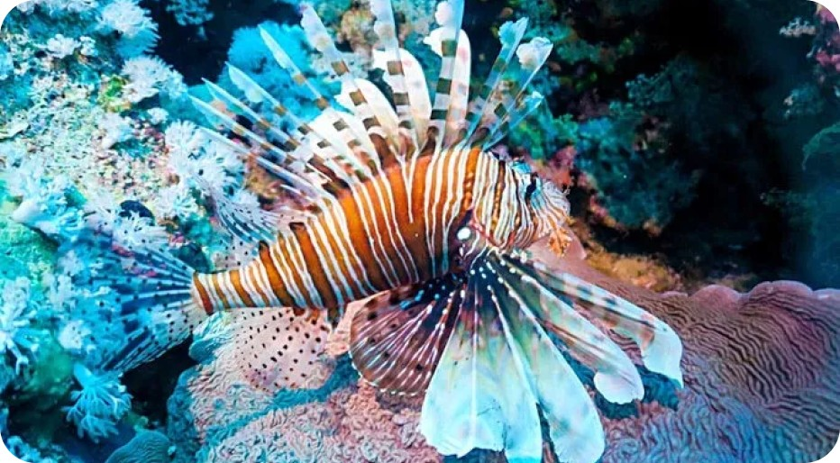
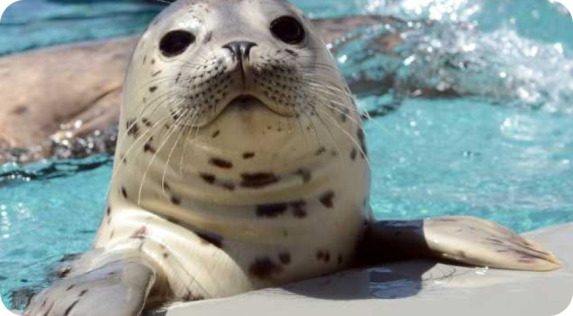
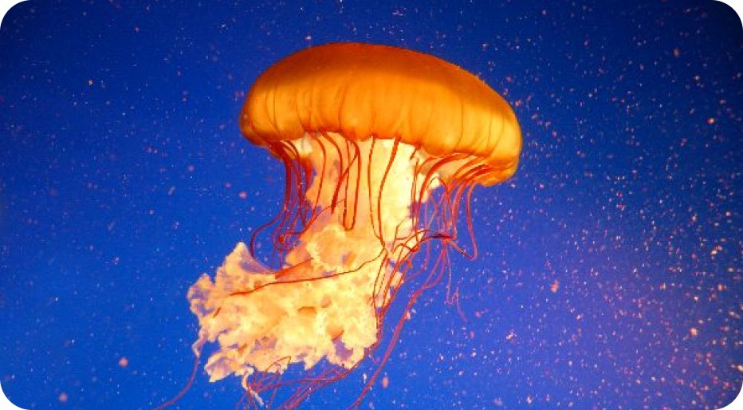

Piscis Aquarium is a great place to enjoy with friends and family. Pisces
Aquarium has a mission in the world of education, entertainment and protection. You can also experience intimate
interactions with our animals. Guided by our experienced zookeepers, you and your family of all ages will
receive interesting information about animals. Introducing supporting facilities to increasevisitor comfort and
satisfaction, such as various events.

Red Lionfish
Lionfish are predatory scorpionfish that inhabit the reefs of the Indo-Pacific and, more recently,
the Western Atlantic. Its name comes from the long, colorful fillet that resembles a lion's
mane.

Harbor Seal
Harbor seal have a round head, a dull nose, and, like other true seals, have no external pinna. They show a wide range of color variations, from silver with black spots to black with gray or white rings to almost pure white.

Pacific Sea Nettle Jellyfish
The large nettle bells in the Pacific Ocean go from yellow to reddish brown, and the long curled tentacles go from yellow to dark brown. These tentacles are covered with deadly stinging cells on their prey. Atlantic sea nettle stings are painful but not dangerous to humans.
prev 1 2 3 4 5 next